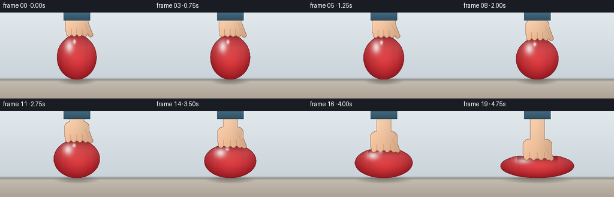
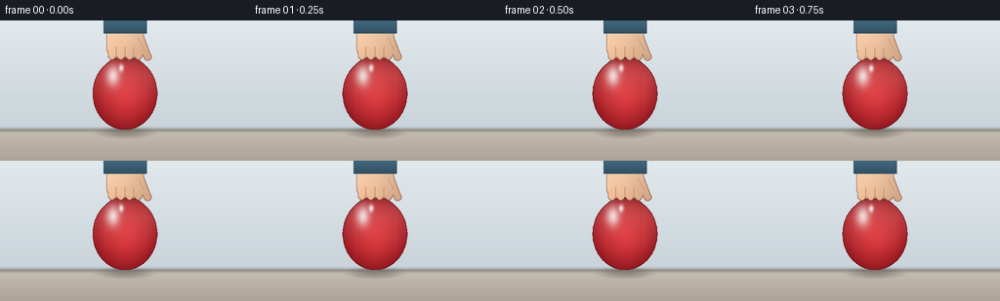
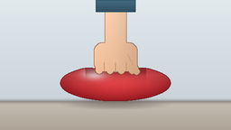

CODING AGENTS AS PIXEL WORLD MODELS
traex/Seed-2.1-Pro-0915 · phygen_013
点击播放 · 原生 RGB 像素
逐轮保存的候选
回放视频、检查图与代码变化。
每份候选均可单独播放。实际图片检查记录在下方工具轨迹中。
候选 01播放与检查图
点击播放 · 原生 RGB 像素


展开代码变化
--- 上一保存版本
+++ 本次保存版本
@@ -0,0 +1,248 @@
+"""Timelapse: an air-filled balloon pressed down by a hand, pressure intensifying.
+
+Renders 20 RGB frames (256x144 @ 4fps) with numpy + PIL only. The balloon is
+modeled as a constant-area ellipse whose top is clamped flat by the hand plane;
+the hand is a stylized mitten-with-grooves shape. Everything is rasterized at
+2x and downsampled for anti-aliasing.
+"""
+import numpy as np
+from PIL import Image, ImageDraw
+
+import artifact_io
+
+W, H, N, FPS = 256, 144, 20, 4.0
+SS = 2
+SW, SH = W * SS, H * SS
+CX = 128.0 # scene center x (native px)
+Y0 = 112.0 # table surface y (native px)
+
+
+def lerp(a, b, t):
+ return a + (b - a) * t
+
+
+# ---------------------------------------------------------------- background
+def make_background():
+ bg = np.zeros((SH, SW, 3), dtype=np.float64)
+ wall_top = np.array([226, 233, 237.0])
+ wall_bot = np.array([201, 211, 217.0])
+ y = np.arange(SH, dtype=np.float64)[:, None]
+ wall_t = np.clip(y / (Y0 * SS), 0, 1)
+ wall = lerp(wall_top[None, None, :], wall_bot[None, None, :],
+ wall_t[:, :, None])
+ bg[:] = wall
+
+ # table: warm matte surface below Y0
+ tbl_top = np.array([197, 190, 179.0])
+ tbl_bot = np.array([172, 162, 149.0])
+ tt = np.clip((y - Y0 * SS) / ((H - Y0) * SS), 0, 1)
+ table = lerp(tbl_top[None, None, :], tbl_bot[None, None, :],
+ tt[:, :, None])
+ bg[int(Y0 * SS):] = table[int(Y0 * SS):]
+
+ # soft wall/table seam shading
+ seam = np.exp(-((y - Y0 * SS) ** 2) / (2 * 3.0 ** 2)) * 0.35
+ bg *= (1.0 - seam[:, :, None])
+ bg += seam[:, :, None] * np.array([60, 55, 50.0])[None, None, :]
+ return np.clip(bg, 0, 255)
+
+
+BG = make_background()
+
+
+def soft_shadow(img, cx, y, hx, hy, alpha):
+ """Elliptical contact shadow blended onto float image."""
+ yy, xx = np.mgrid[0:SH, 0:SW].astype(np.float64)
+ dx = (xx - cx * SS) / max(hx * SS, 1)
+ dy = (yy - y * SS) / max(hy * SS, 1)
+ d = dx * dx + dy * dy
+ a = np.clip(1 - d, 0, 1) ** 1.5 * alpha
+ img[:] = img * (1 - a[:, :, None]) + np.array([52, 46, 42.0]) * a[:, :, None]
+
+
+# ----------------------------------------------------------------- geometry
+def balloon_params(i):
+ t = i / (N - 1)
+ p = t ** 2.2 # ease-in: pressure intensifies rapidly
+ hh0, hw0, hh1 = 37.0, 33.0, 20.0
+ hh = lerp(hh0, hh1, p)
+ hw = hw0 * hh0 / hh # constant ellipse area
+ cy = Y0 - hh
+ top0 = Y0 - 2 * hh0
+ top1 = Y0 - 2 * hh1 + 8.0 # hand ends below the free ellipse top
+ yh = lerp(top0, top1, p)
+ # late-frame trembling from rapidly rising pressure
+ tremble = p * 0.9
+ hw *= 1 + 0.012 * np.sin(i * 2.3 + 0.6) * tremble
+ yh += 0.5 * np.sin(i * 5.1) * tremble
+ return hw, hh, cy, yh, p
+
+
+def balloon_mask(hw, hh, cy, yh):
+ """Ellipse whose crown is flattened only under the hand contact patch."""
+ m = Image.new("L", (SW, SH), 0)
+ d = ImageDraw.Draw(m)
+ hw2, hh2, cy2, yh2 = hw * SS, hh * SS, cy * SS, yh * SS
+ xs = np.linspace(CX * SS - hw2, CX * SS + hw2, 240)
+ xn = (xs - CX * SS) / hw2
+ cap = hh2 * np.sqrt(np.clip(1 - xn ** 2, 0, 1))
+ # contact blend: fully flat at center, free ellipse crown past |xn| = 0.62
+ f = np.clip(1 - np.abs(xn) / 0.62, 0, 1)
+ f = f * f * (3 - 2 * f)
+ top = (cy2 - cap) * (1 - f) + yh2 * f
+ bot = cy2 + cap
+ pts_top = list(zip(xs.tolist(), top.tolist()))
+ pts_bot = list(zip(xs[::-1].tolist(), bot[::-1].tolist()))
+ d.polygon(pts_top + pts_bot, fill=255)
+ return np.asarray(m, dtype=np.uint8)
+
+
+def hand_mask(yh, p):
+ m = Image.new("L", (SW, SH), 0)
+ d = ImageDraw.Draw(m)
+ cx = CX * SS
+ yh2 = yh * SS
+
+ # forearm / wrist
+ d.rectangle([cx - 12 * SS, 0, cx + 12 * SS, yh2 - 24 * SS], fill=255)
+ # shirt sleeve cuff at the top edge
+ sleeve = Image.new("L", (SW, SH), 0)
+ ds = ImageDraw.Draw(sleeve)
+ ds.rectangle([cx - 22 * SS, 0, cx + 22 * SS, 13 * SS], fill=255)
+
+ # four finger capsules, spreading slightly as pressure rises
+ spread = 1 + 0.35 * p
+ offs = np.array([-13.5, -4.5, 4.5, 13.5]) * SS * spread
+ for ox in offs:
+ d.rounded_rectangle(
+ [cx + ox - 4.2 * SS, yh2 - 16 * SS,
+ cx + ox + 4.2 * SS, yh2 + 2 * SS],
+ radius=4.2 * SS, fill=255)
+ # palm widens with the fingers
+ half = (19 + 5 * p) * SS
+ d.rounded_rectangle(
+ [cx - half, yh2 - 33 * SS, cx + half, yh2 - 1 * SS],
+ radius=9 * SS, fill=255)
+ # thumb angled along the right side
+ d.line([(cx + 15 * SS, yh2 - 22 * SS),
+ (cx + 23 * SS, yh2 - 1 * SS)], fill=255, width=8 * SS)
+ d.ellipse([cx + 19 * SS, yh2 - 5 * SS,
+ cx + 27 * SS, yh2 + 3 * SS], fill=255)
+
+ grooves = []
+ for a, b in zip(offs[:-1], offs[1:]):
+ gx = cx + (a + b) / 2
+ grooves.append((gx, yh2 - 1 * SS, gx, yh2 - 11 * SS))
+ return np.asarray(m), np.asarray(sleeve), grooves
+
+
+def edge_pixels(mask):
+ er = mask.copy()
+ for dy in (-1, 0, 1):
+ for dx in (-1, 0, 1):
+ if dx == 0 and dy == 0:
+ continue
+ er = np.minimum(er, np.roll(np.roll(mask, dy, 0), dx, 1))
+ er[:1, :] = er[-1:, :] = er[:, :1] = er[:, -1:] = 0
+ return (mask > 0) & (er == 0)
+
+
+# ------------------------------------------------------------------ shading
+RED_HI = np.array([248.0, 132, 130])
+RED_MID = np.array([226.0, 60, 64])
+RED_DK = np.array([146.0, 24, 32])
+OUT_RED = np.array([104.0, 15, 22])
+
+SKIN_LT = np.array([247.0, 207, 174])
+SKIN_MD = np.array([235.0, 188, 152])
+SKIN_DK = np.array([206.0, 150, 112])
+OUT_SKIN = np.array([138.0, 86, 64])
+SHIRT = np.array([66.0, 106, 128])
+SHIRT_DK = np.array([46.0, 78, 96])
+
+
+def shade_balloon(img, mask, hw, hh, cy, yh):
+ inside = mask > 0
+ ys, xs = np.nonzero(inside)
+ xn = (xs - CX * SS) / (hw * SS)
+ yn = (ys - cy * SS) / (hh * SS)
+ q = np.sqrt(xn * xn + yn * yn)
+ t = np.clip(q, 0, 1) ** 1.7
+ col = lerp(RED_MID, RED_DK, t[:, None])
+ # soft light wrapping over the upper-left crown
+ top_lit = np.clip(0.55 - yn, 0, 1) ** 1.5
+ col = lerp(col, RED_HI[None, :], 0.30 * top_lit[:, None])
+ # specular gloss, upper-left
+ s1 = np.exp(-(((xn + 0.38) / 0.20) ** 2 + ((yn + 0.50) / 0.28) ** 2))
+ s2 = np.exp(-(((xn + 0.12) / 0.07) ** 2 + ((yn + 0.72) / 0.10) ** 2))
+ col = lerp(col, np.array([255.0, 252, 250]),
+ (0.85 * s1 + 0.9 * s2)[:, None])
+ # occlusion where the hand presses onto the rubber
+ below = np.clip((ys - yh * SS) / (9 * SS), 0, 1)
+ contact = np.exp(-below * 2.2) * (np.abs(xn) < 0.55)
+ col = lerp(col, np.array([84.0, 14, 20]), 0.42 * contact[:, None])
+ img[ys, xs] = col
+ img[edge_pixels(mask)] = OUT_RED
+
+
+def shade_hand(img, mask, sleeve, grooves, yh):
+ inside = mask > 0
+ ys, xs = np.nonzero(inside)
+ y_lo, y_hi = ys.min(), ys.max()
+ yt = (ys - y_lo) / max(y_hi - y_lo, 1)
+ xt = (xs - CX * SS) / (22 * SS)
+ col = lerp(SKIN_LT, SKIN_MD, yt[:, None])
+ # light from the upper left
+ col *= (1 - 0.10 * np.clip(xt, 0, 1)[:, None]
+ + 0.05 * np.clip(-xt, 0, 1)[:, None])
+ # gentle shading toward the fingertips
+ col = lerp(col, SKIN_DK[None, :], 0.18 * yt[:, None] ** 2)
+ img[ys, xs] = np.clip(col, 0, 255)
+
+ pil = Image.fromarray(np.clip(img, 0, 255).astype(np.uint8), mode="RGB")
+ d = ImageDraw.Draw(pil)
+ for gx, y1, _, y2 in grooves:
+ d.line([(gx, y1), (gx, y2)], fill=tuple(SKIN_DK.astype(int)), width=SS)
+ # thumb separation crease
+ d.line([(CX * SS + 13 * SS, yh * SS - 20 * SS),
+ (CX * SS + 19 * SS, yh * SS - 8 * SS)],
+ fill=tuple(SKIN_DK.astype(int)), width=SS)
+ img[:] = np.asarray(pil, dtype=np.float64)
+ img[edge_pixels(mask)] = OUT_SKIN
+
+ # sleeve cuff laid over the wrist at the top of frame
+ sm = sleeve > 0
+ yy = np.nonzero(sm)[0]
+ cuff = np.empty((len(yy), 3))
+ cuff[:] = SHIRT[None, :]
+ cuff *= (1 - 0.25 * (yy / (13 * SS)))[:, None]
+ img[sm] = cuff
+ se = edge_pixels(sleeve.astype(np.uint8))
+ img[se] = SHIRT_DK
+ img[int(13 * SS), sm[int(13 * SS)]] = SHIRT_DK
+
+
+# ------------------------------------------------------------------- render
+def render_frame(i):
+ hw, hh, cy, yh, p = balloon_params(i)
+ img = BG.copy()
+ soft_shadow(img, CX, Y0 + 3, hw * 1.06, 7, 0.34)
+
+ bm = balloon_mask(hw, hh, cy, yh)
+ shade_balloon(img, bm, hw, hh, cy, yh)
+
+ hm, sleeve, grooves = hand_mask(yh, p)
+ shade_hand(img, hm, sleeve, grooves, yh)
+
+ frame = Image.fromarray(np.clip(img, 0, 255).astype(np.uint8))
+ frame = frame.resize((W, H), Image.Resampling.LANCZOS)
+ return np.asarray(frame, dtype=np.uint8)
+
+
+def main():
+ frames = [render_frame(i) for i in range(N)]
+ artifact_io.save(frames, ".")
+
+
+if __name__ == "__main__":
+ main()
可观测工具轨迹
实际执行的命令与返回图片。
命令 1exit 0
/bin/bash -lc 'cat prompt.txt GENERATION_RULES.md task_spec.json 2>/dev/null; ls -la'
命令 2exit 0
/bin/bash -lc 'cat artifact_io.py'
命令 3exit 0
/bin/bash -lc 'sed -n 95,140p generate.py'
命令 4exit 0
/bin/bash -lc 'python generate.py && ls -la'
视觉工具实际返回图片 1

视觉工具实际返回图片 2

保存候选 1 份；完成命令 4 次；可验证图片返回 2 张。原始 API 响应与完整日志保留在本地。